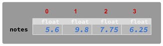

Arrays
Quan es necessita processar múltiples dades del mateix tipus, es poden guardar en un array
i processar-les conjuntament com una sola unitat. És una forma convinent de fer-ho quan hi ha una gran quantitat
de dades o quan no se sap a priori quantes dades hi haurà.
Has de considerar un array com una col·lecció d'elements del mateix tipus. Tots els elements
es guarden a la memòria de forma seqüencial (un darrere de l'altre).
Imagina un programa on hem de processar les notes dels alumnes. Per a guardar-les en memòria podríem utilitzar
difrents variables de tipus float:
float nota1 = 5.6f;
float nota2 = 9.8f;
float nota3 = 7.75f;
float nota4 = 6.25f;

En casos com aquest, podem utilitzar un array per a emmagatzemar totes les notes en una
única variable:
float[] notes = { 5.6f, 9.8f, 7.75f, 6.25f };

Un array proporciona un únic nom per a tots els elements. La quantitat d'elements que es pot emmagatzemar s'estableix
quan es crea l'array i no es pot canviar. Sí que es pot canviar un element guardat a l'array.
Per a accedir a un element de l'array (per obtenir el seu valor, o modificar-lo)
s'ha d'utilitzar el seu índex numèric. Els índex comencen per 0:

El primer element d'un array té index 0, i l'últim té l'índex igual al tamany - 1.
Crear un array
Per a declarar un array hem de posar els caracters [] després del tipus dels elements de l'array:
tipusElements[] nomArray;
Per exemple, per a crear un array d'enters:
int[] arrayEnters;
Per a inicialitzar els valors d'un array, podem enumerar-los entre claus {} i separats per comes ,:
int[] arrayEnters = { 23, 34, 45, 56 };
String[] arrayStrings = { "this", "is", "an", "array", "of", "Strings" };
També es pot inicialitzar un array simplement indicant el seu tamany (la quantitat d'elements).
En aquest cas el valor dels elements de l'array serà un valor per defecte segons el tipus.
tipusElements[] nomArray = new tipusElements[tamany];
Per als tipus numèrics, el valor per defecte és 0, per als booleans és false i per als Strings és el
valor especial null.
int[] arrayEnters = new int[5]; // { 0, 0, 0, 0, 0 }
float[] arrayFloats = new float[5]; // { 0.0, 0.0, 0.0, 0.0, 0.0 }
char[] arrayChars = new char[5]; // { 0, 0, 0, 0, 0 }
boolean[] arrayBooleans = new boolean[5]; // { false, false, false, false }
String[] arrayStrings = new String[5]; // { null, null, null, null, null }
Tamany d'un array
El tamany (o longitud) d'un array es refereix al nombre d'elements que té.
Com hem vist, un array no es pot canviar de tamany un cop creat
(tot i que sí que es pot crear un array diferent y copiar-hi les dades).
Per a obtenir el tamany d'un array, es pot accedir a la propietat espcial length. Aquí tens un exemple:
int[] arrayEnters = { 1, 2, 3, 4 };
int tamany = arrayEnters.length; // quantitat d'elements de l'array
System.out.println(tamany); // 4
Accedir als elements
Per a accedir a un element d'un array s'ha posar l'índex de l'element entre corxets [] després del nom de l'array.
nomArray[indexElement]
D'aquesta forma pots obtenir el valor d'un element, o modificar-lo.
String[] arrayStrings = { "hola", "que", "tal" };
// obtenim el valor de l'element en la posició 0, i l'imprimim
System.out.println(arrayStrings[0]); // hola
// obtenim el valor de l'element en la posició 1, i l'assignem a la variable element
String element = arrayStrings[1]; // element: "que"
// modifiquem el valor de l'element en la posició 2
arrayStrings[2] = "qual"; // arrayStrings: {"hola", "que", "qual" }
ArrayIndexOutOfBoundsException
// in progress
Si un programa tracta d'accedir a un element d'un array utilitzant un índex inferior a 0 o igual o superior
al tamany, el programa s'aturarà amb una exepció ArrayIndexOutOfBoundsException. Significa que
l'índex al qual s'està tractant d'accedir està fora dels límits de l'array:
int[] numeros = { 101 }
Els índex